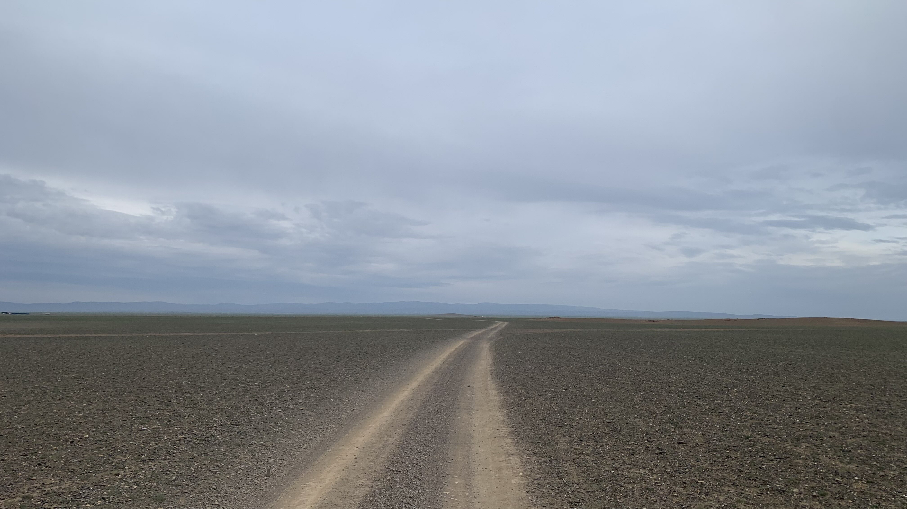
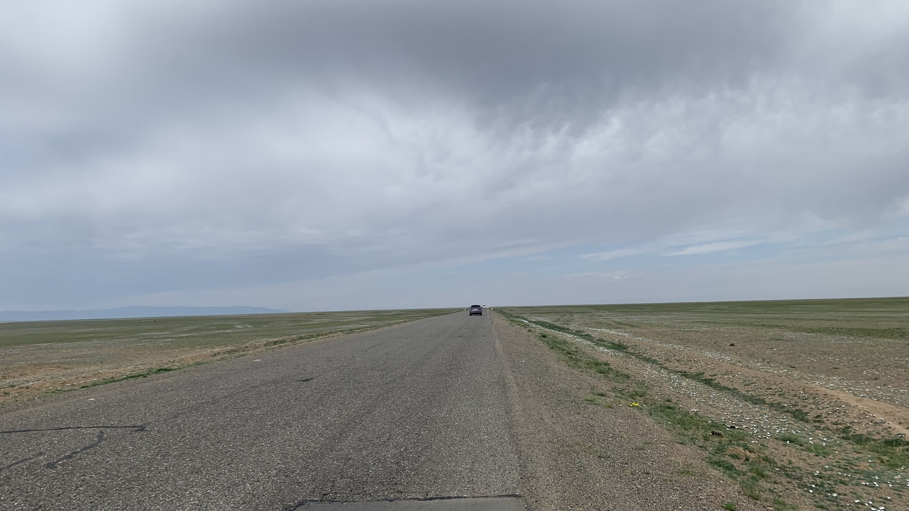
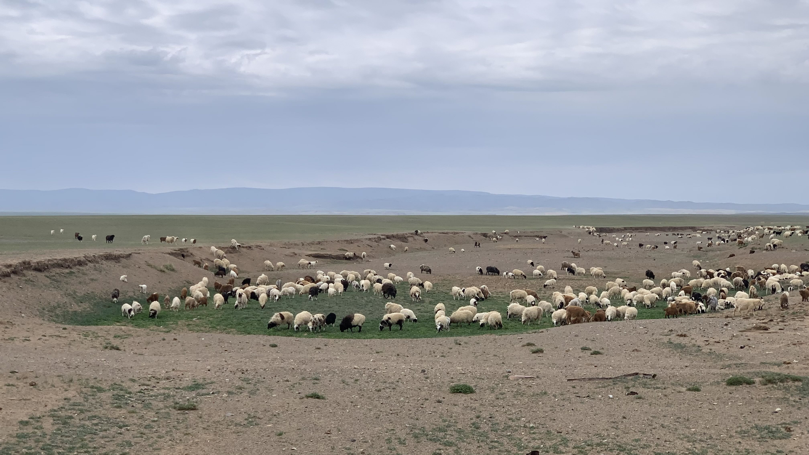
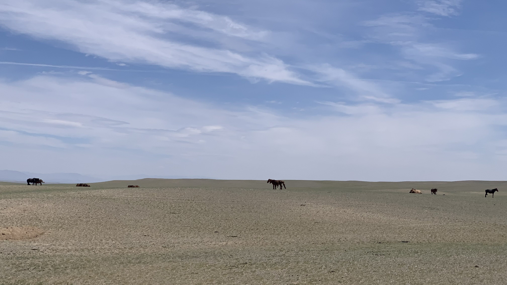
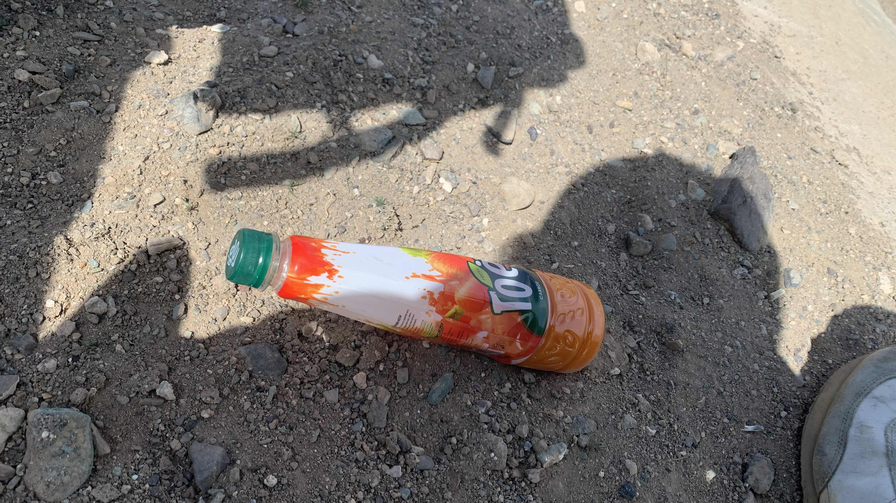
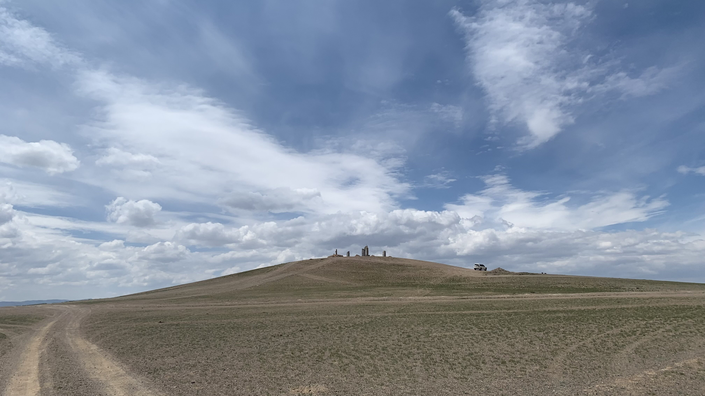
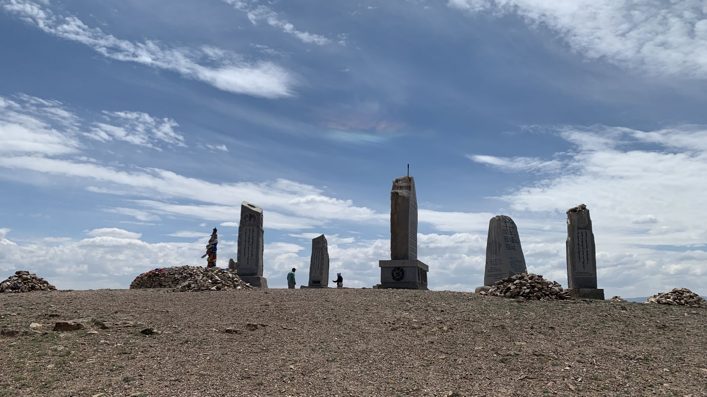
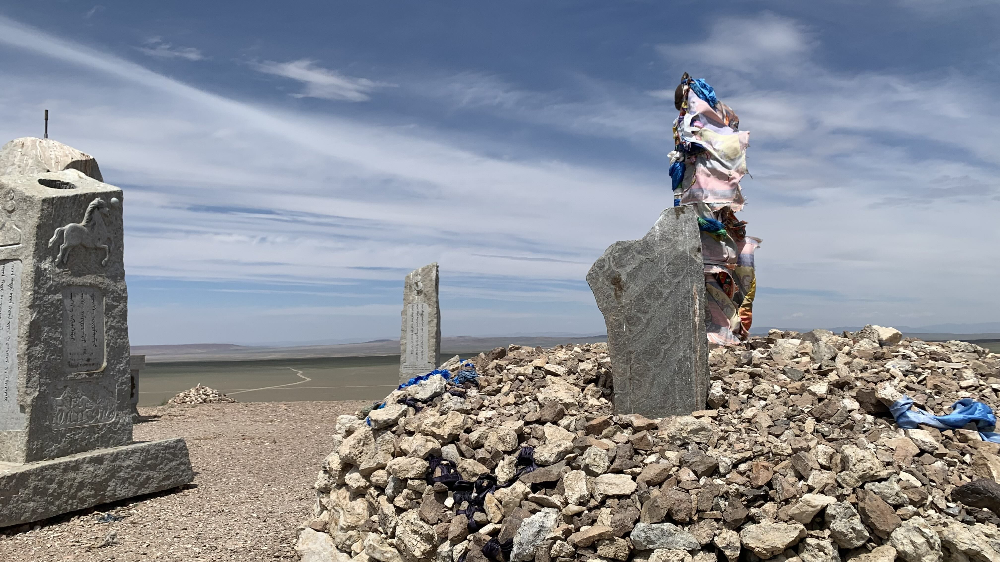
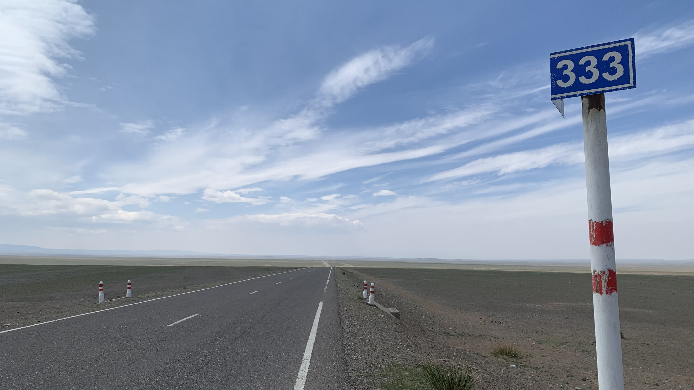
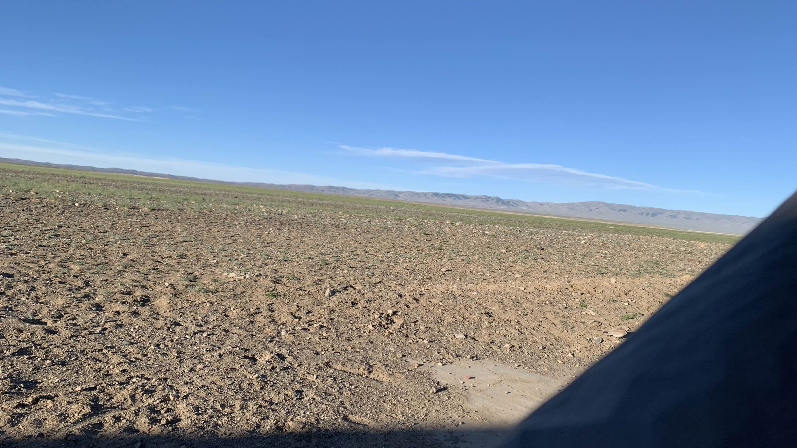

k-Day 106｜第一顆鹿石
這兩天時區一直跳來跳去，一直不太確定自己究竟還剩多少時間，因此收拾裝備後就早早出發。

決定走南線後，在衛星圖上搜尋到一處像是鹿石遺跡的空拍影像。在風大到騎不動之前抵達，也許附近會有涵洞可以躲一晚。

一樣是低著頭騎車，路邊出現許多白色小花。

維持十公里休息一次的節奏，坐在羊群邊吃早餐。

路過的車輛不多，路上也沒見到幾個蒙古包，倒是出現一群馬兒。馬群在北方，迎著西北風相當不舒適，不過此刻心中興起邪惡的念頭。

拿出珍藏的蘿蔔汁，朝著馬兒們扭開蓋子，在他們面前灌了幾口。
動物們，這就是人類文明所製造出的美味。同樣吹著風，你們只能吃草，身為人類的我可是在喝著礫石灘上長不出來的蘿蔔汁液。
馬群並不理會我，只是看了幾眼就繼續吃草。覺得自己的行徑有點蠢，於是跨上車繼續被風吹。

大約是中午抵達的，圓弧形的小土丘上立著敖包和石碑。從遠處往上看有點不妙，高度和寬度都不像鹿石的造型
推著二十三號爬到半山腰，坡度過陡，只好把車靠在石椅上。此時一輛轎車開上山坡。後座走下一位阿北，駕駛座應該是他的兒子。
阿北看了看二十三號，問我：「Япон？」是日本的意思。
我點點頭，在大風天面對一面之緣的阿北，沒有想要多解釋什麼的欲望。
阿北一副猜中的表情，轉頭看向剛下車的兒子說：「Япон」

躲在原地靠著二十三號躲風，等山坡上的人參觀完在上去吧。
沒多久阿北和兒子參觀完走回車旁，從車內拿出一塊Ааруул，要兒子幫他跟我拍張照片。
我拿起手上的酸奶磚塊，阿北說：「放在口袋裡。」
拍完照後轉過身對著我，用堅定的眼神伸出手，我伸手握了一下。阿北神態相當正式，我也鞠躬表示感謝。

等車子開走後走上坡頂。是野生鹿石啊！！！！！！！！！騎了幾千公里遇到的第一顆野生鹿石啊！！！！！

風實在太大，沒有在山丘上睡覺的可能，只好滑下山尋找涵洞。自從被揍後，會盡量拍下離自己最近的公路里程數。考量到在荒野中找屍體的困難度，希望可以減少遇害後警方搜索的時間。

這個涵洞有點小，擋不了多少風。躲在陰影下吃餅乾，偶爾回頭看看身後小山丘上的石頭。
今日花費： 0元